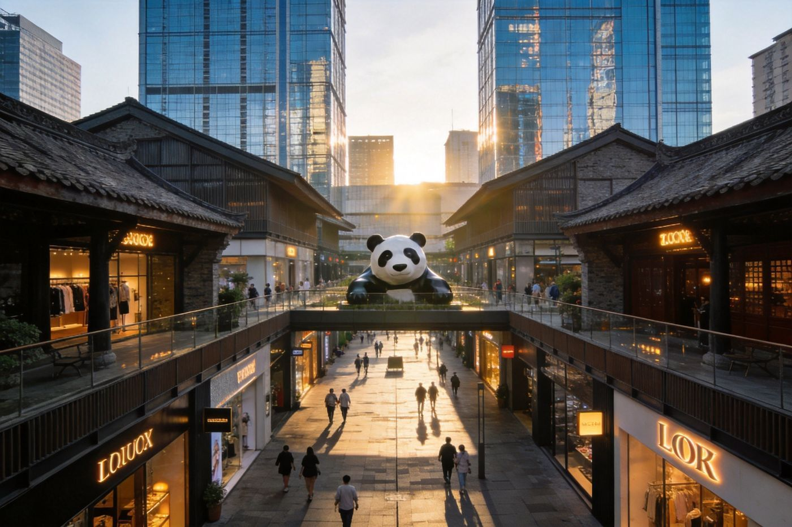
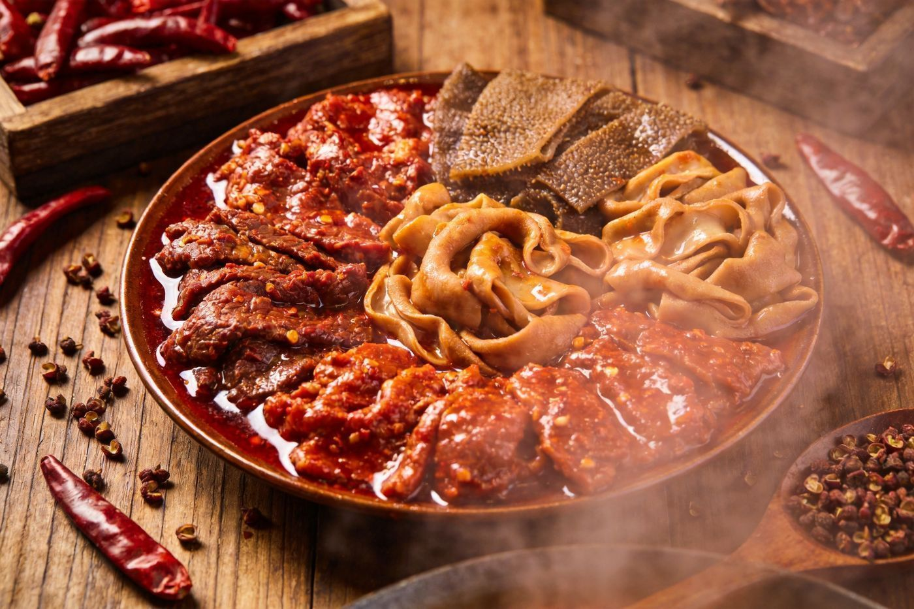
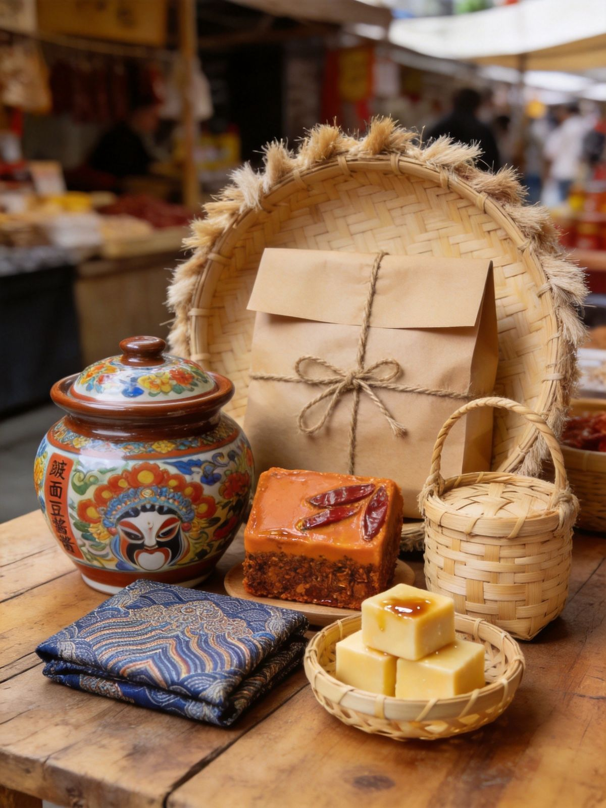

封面
总览
短程介绍
长程介绍
景点介绍
购物介绍
美食介绍
交通避坑
特产
CHENGDU · 成都
巴适成都
熊猫 · 慢生活 · 麻辣之都
大熊猫
宽窄巷子
三国
世界遗产
短程 2-3 天
→
长程 4-5 天 · 逐日行程
1
/ 9
成都 · 巴适慢活
白皮书 · 一览
成都一览
Overview
天府之国 · 泡着玩
老巷灯火，慢到什么都是风景
📍 城市印象
蜀地闲适之城，
熊猫 + 三国 + 世界遗产
三张名片
市区松弛好逛，
地铁+共享单车
足以覆盖，节奏慢
麻辣川味是灵魂，也是一天三顿的日常
短程
2-3天
熊猫 + 老城精华
熊猫基地 + 宽窄巷子 + 锦里武侯祠
中程
3-4天
加世界遗产
短程 + 都江堰（+青城山）一日
长程
4-5天
深度慢游
全部精华 + 文创 + 美食泡够
🛏
住哪
春熙路/太古里商圈最方便，宽窄巷子一带更有烟火气，地铁沿线皆宜
2
/ 9
成都 · 巴适慢活
短程 · 2-3 天
短程介绍 ·
2-3 天
Short Trip · Old Town Loop
短程住下就够 · 悠闲不赶
Day·1
熊猫 + 老城
熊猫基地
→
宽窄巷子
→
夜：太古里
☀️ 白天
上午
大熊猫繁育研究基地（7:30前到，看滚滚吃饭最活跃）
下午
宽窄巷子慢逛、喝盖碗茶
🌙 晚上
春熙路·太古里
：熊猫爬墙雕塑打卡 + IFS商圈夜景
Day·2
三国 + 市井
锦里武侯祠
→
人民公园
→
夜：火锅
☀️ 白天
上午
武侯祠红墙竹影 + 紧邻锦里古街
下午
人民公园盖碗茶、掏耳朵，成都市井慢生活
🌙 晚上
来一顿
麻辣火锅
收尾
TIP
第3天可选：
都江堰一日
（高铁约1小时），或补杜甫草堂/大慈寺，节奏不累。
3
/ 9
成都 · 巴适慢活
长程 · 4-5 天
长程介绍 ·
4-5 天
Long Trip · Deep City
D1
熊猫 + 老城
熊猫基地 → 宽窄巷子 → 夜：太古里
D2
三国 + 市井
锦里武侯祠 → 人民公园 → 夜：火锅
D3
世界遗产
都江堰 → 青城山前山（一日往返）
D4
慢生活
杜甫草堂/大慈寺 → 东郊记忆 → 夜：建设路小吃
D5
购物 · 回味
春熙路买特产 → 咖啡馆 → 夜：最后一顿 + 夜景
都江堰

太古里商圈
锦里古街
TIP
长程更松弛，把熊猫、都江堰、古街摊开，多留时间给
吃
。
4
/ 9
成都 · 巴适慢活
市区核心景点
市区景点
City Highlights
熊猫基地
必去
看滚滚吃饭爬树，全价55元·学生27，需提前线上约(现场无售票)，早到最佳
宽窄巷子
免费
川西老巷三条并行，喝茶小吃文创
锦里 + 武侯祠
三国
武侯祠50元·学生25；锦里免费，三国+川西古街组合
都江堰/青城山
世界遗产
世界灌溉工程 + 道教名山，可一日联游
春熙路 · 太古里
潮流
最潮商圈，熊猫爬墙地标，夜最美
人民公园/夜游
市井
盖碗茶掏耳朵，夜晚老街灯火
➕
可选
杜甫草堂、文殊院（禅意）、金沙遗址博物馆、东郊记忆（工业文创出片）
TIP
熊猫基地、都江堰
网上提前订票
；景区逢周一周一闭馆的以官网为准。
5
/ 9
成都 · 巴适慢活
购物指南
购物介绍
Shopping
老城烟火 → 现代商圈
🛍 老城商圈
宽窄巷子 / 锦里
：文创伴手礼 + 古街氛围
建设路 / 奎星楼
：小吃 + 年轻潮店
🏙 新城商圈
春熙路 · IFS · 太古里
：一线大牌 + 川西院子商业
品牌、餐饮、影院齐全，夜晚灯光出片
⚠️
省着点
景区内手信偏贵，伴手礼去太古里商圈店铺/大超市更实惠
TIP
购物放
行程后段
（长程 D5），避免拎着逛景点。
6
/ 9
成都 · 巴适慢活
成都味道
美食介绍
Local Flavors

麻辣火锅
川菜 · 小吃
🍜 必吃招牌
麻辣火锅 / 串串香
——毛肚、黄喉、鸭肠走起
甜水面 / 担担面 / 钵钵鸡
——街头小吃名片
蛋烘糕 / 冒菜 / 夫妻肺片
——本地人日常
🗺 觅食街区
建设路夜市 / 奎星楼街 / 玉林路
锦里、太古里大慈寺一带也有不少老字号
🔥
吃辣警告
川辣后劲足，怕辣选
鸳鸯锅
，说"微辣"也可能很辣
TIP
成都人吃辣审美极高，认准
本地人排队的店
更不踩雷。
7
/ 9
成都 · 巴适慢活
怎么去 & 避坑
交通 · 避坑
Getting Around
✈️ / 🚄 怎么到
飞机
：双流机场（近南三环，进城快）；
天府机场（远，城东40km+）
高铁
：成都东站/南站，成渝、成贵等枢纽，站内地铁直连
🚇 市内
地铁网络发达 +
共享单车
，市区景点基本覆盖
熊猫基地有地铁3号线熊猫大道站 + 接驳；都江堰高铁/大巴约1小时
⚠️
两个机场别走错
天府机场远、航司分布不同，出发前确认自己航班在哪个机场
🎫
门票预约
熊猫基地、都江堰、武侯祠等热门**网上提前订**，旺季会限流
TIP
看熊猫
7:30-8:30
到；火锅店晚餐高峰等位久，可错峰或线上排号。
8
/ 9
成都 · 巴适慢活
伴手礼 · 特色
成都特产
Local Souvenirs

把天府带回家
🎁 必买清单
郫县豆瓣酱
——川菜之魂
火锅底料
——牛油麻辣，回家续火锅
蜀锦 / 蜀绣
——非遗织造文创
大熊猫周边
——基地官方文创超可爱
竹编 / 茉莉花茶
——川西手作与茶礼
🗺 去哪买
太古里商圈品牌店、熊猫基地官方文创店
郫县豆瓣去当地大超市/特产店更保真实惠
TIP
酱料、底料注意
托运/安检
规定，液体与膏状提前分装。
9
/ 9
WorldStip · 旅行小册子 · 成都 A5 卡片手册 ｜ 门票/价格为参考，以景区官网与当日实际为准 ｜ 图片均为原创生成，无版权风险
Insta360
记录美好
记录美好生活
相机指南 · CAMERA GUIDE